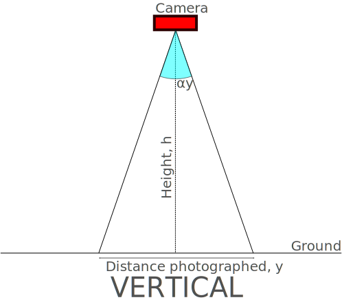

Calculating meters per pixel from aerial photographs
21 Jul 2014Aim
The aim of this post is to demonstrate how to calculate the number of meters a single pixel takes up in a photo, when taken pointing directly downwards from an aerial position such as a UAV. The example values given are those taken from the Canon Ixus 132 I am currently working with.
Trigonometry
Firstly, let’s look at how we can go from the information we have to the information we need. We need to know the following to compeltely determine the MPP (meters per pixel):
- Resolution of the camera
- Height from which photo was taken
- Angle of view of the camera
Then let us parametrise the situation as follows:
- Ground distances photographed in horizontal and vertical, respectively: \(x\) and \(y\)
- Resolution of camera: \(r_x\) and \(r_y\)
- Height from which photo was taken: \(h\)
- Angle of view of the camera: \(\alpha_x\) and \(\alpha_y\)
- MMP: \(\mu_x\) and \(\mu_y\)
The following diagrams illustrate the horizontal and vertical views that the camera sees:


It is clear by basic trigonometry that the tangent of half the angle of view is equal to half the ratio of the ground distance and the height. As parametrised:
\[ \tan\left(\frac{\alpha_x}{2}\right) = \frac{x}{2h} \]
And the same for \(y\) Rearranging this for \(x\):
\[ x = 2h\tan\left(\frac{\alpha_x}{2}\right) \]
Then the MMP is given by:
\[ \mu_x = \frac{x}{r_x} = \frac{2h\tan\left(\frac{\alpha_x}{2}\right)}{r_x} \]
Finding camera resolution
The camera resolution should be displayed on the camera specifications, or in the camera settings dialogue. If you don’t have access to this information, it can also be read directly from the EXIF metadata using exiftool:
Finding angle of view
The angle of view of a camera can be calculated from the camera’s effective focal length, \(f\) (which excluding macro photography is approximately equal to the stated focal length), and the dimension of the sensor in that direction, \(d\) as follows:
\[ \alpha = 2\arctan\left(\frac{d}{2f}\right) \]
The focal length is stated on the camera specs. For my Ixus 132 the stated focal length is 5.0 mm.
To find the dimension of the camera sensor, you need to know what type of sensor it is. It’ll either be a CCD sensor (Charge Coupled Device) or a CMOD sensor (Complementary Metal-Oxide Semiconductor).
This image, courtesy of gizmag, show the dimensions of various common sensor sizes:

If your sensor is not listed here, then Wikipedia has a full table of listings for every sensor imaginable over on the page for Image sensor format.
For instance, my camera has a 1/2.3” CCD, meaning it has dimensions 6.17 mm by 4.55 mm.
Thus, plugging these values into the equation above, my camera has angles of view of:
\[ \alpha_x = 63.3^{\circ} \\\
\alpha_y = 48.9^{\circ} \]
Conclusion
Then plugging these values into the formula given above, the MMP as a function of height is:
\[ \mu_x = 0.2675h ~\mathrm{mm/pixel} \\\
\mu_y = 0.2631h ~\mathrm{mm/pixel} \]
Where \(h\) is in meters. Thus at a typical UAV flight height of \(h = 100~\mathrm{m}\) , the MMP is 2.68 cm per pixel in the horizontal and 2.63 cm per pixel in the vertical.